1. Python IDE
本文为大家推荐几款款不错的 Python IDE（集成开发环境），比较推荐 PyCharm，当然你可以根据自己的喜好来选择适合自己的 Python IDE。
1.1. PyCharm
PyCharm 是由 JetBrains 打造的一款 Python IDE。
PyCharm 具备一般 Python IDE 的功能，比如：调试、语法高亮、项目管理、代码跳转、智能提示、自动完成、单元测试、版本控制等。
另外，PyCharm 还提供了一些很好的功能用于 Django 开发，同时支持 Google App Engine，更酷的是，PyCharm 支持 IronPython。
PyCharm 官方下载地址：http://www.jetbrains.com/pycharm/download/
效果图查看：
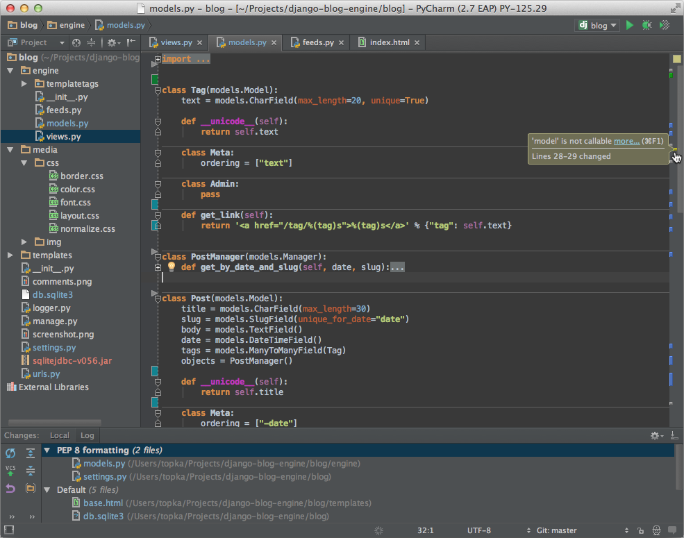
1.2. Sublime Text
Sublime Text 具有漂亮的用户界面和强大的功能，例如代码缩略图，Python 的插件，代码段等。还可自定义键绑定，菜单和工具栏。
Sublime Text 的主要功能包括：拼写检查，书签，完整的 Python API ， Goto 功能，即时项目切换，多选择，多窗口等等。
Sublime Text 是一个跨平台的编辑器，同时支持 Windows、Linux、Mac OS X等操作系统。
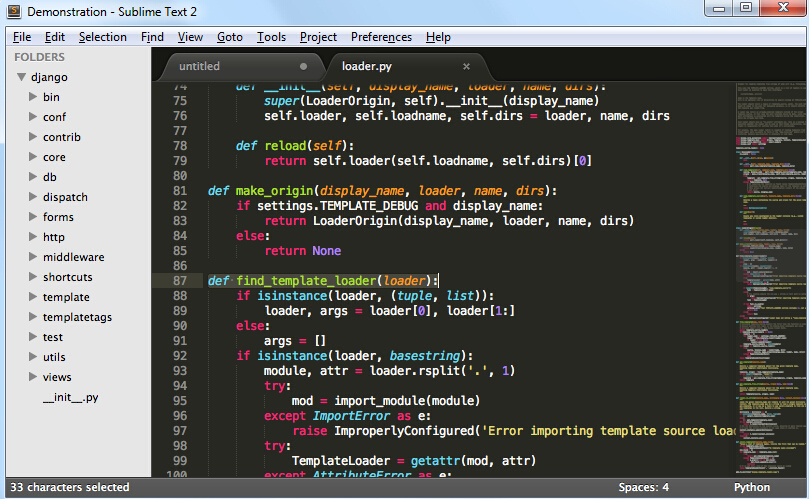
使用Sublime Text 2的插件扩展功能，你可以轻松的打造一款不错的 Python IDE，以下推荐几款插件（你可以找到更多）：
- CodeIntel：自动补全+成员/方法提示（强烈推荐）
- SublimeREPL：用于运行和调试一些需要交互的程序（E.G. 使用了Input()的程序）
- Bracket Highlighter：括号匹配及高亮
- SublimeLinter：代码pep8格式检查
1.3. Eclipse+Pydev
1.3.1. 1、安装Eclipse
Eclipse可以在它的官方网站Eclipse.org找到并下载，通常我们可以选择适合自己的Eclipse版本，比如Eclipse Classic。下载完成后解压到到你想安装的目录中即可。
当然在执行Eclipse之前，你必须确认安装了Java运行环境,即必须安装JRE或JDK，你可以到（http://www.java.com/en/download/manual.jsp）找到JRE下载并安装。
1.3.2. 2、安装Pydev
运行Eclipse之后，选择help-->Install new Software，如下图所示。
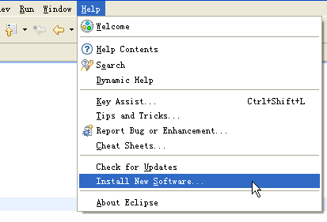
点击Add，添加pydev的安装地址：http://pydev.org/updates/，如下图所示。
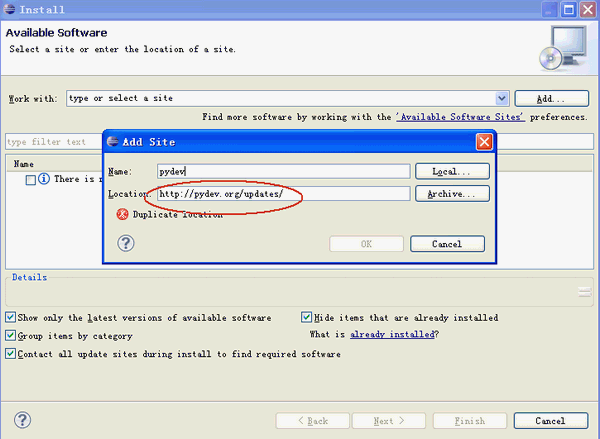
完成后点击"ok"，接着点击PyDev的"+"，展开PyDev的节点，要等一小段时间，让它从网上获取PyDev的相关套件，当完成后会多出PyDev的相关套件在子节点里，勾选它们然后按next进行安装。如下图所示。
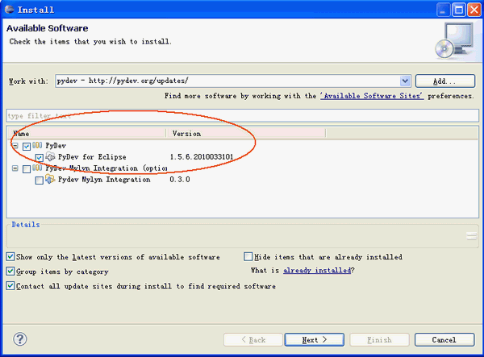
安装完成后，重启Eclipse即可
1.3.3. 3、设置Pydev
安装完成后，还需要设置一下PyDev，选择Window -> Preferences来设置PyDev。设置Python的路径，从Pydev的Interpreter - Python页面选择New
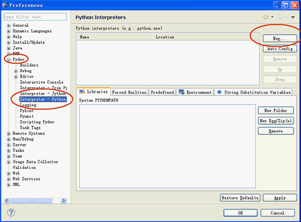
会弹出一个窗口让你选择Python的安装位置，选择你安装Python的所在位置。
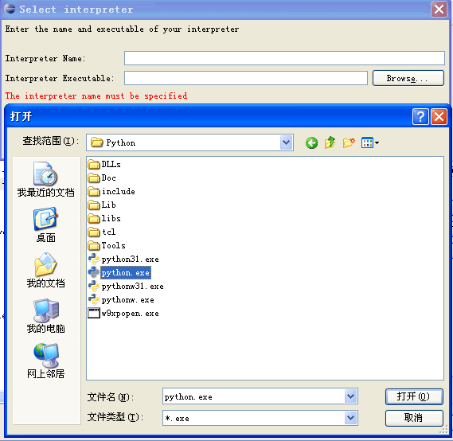
完成之后PyDev就设置完成，可以开始使用。
1.3.4. 4、建立Python Project：
安装好Eclipse+PyDev以后，我们就可以开始使用它来开发项目了。首先要创建一个项目，选择File -> New ->Pydev Project
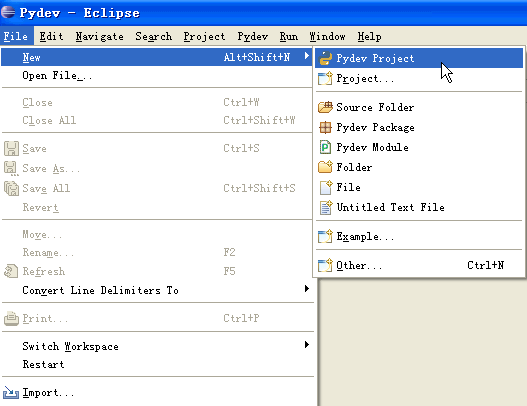
会弹出一个新窗口，填写Project Name，以及项目保存地址，然后点击next完成项目的创建。
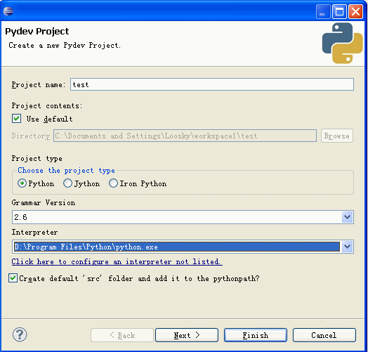
1.3.5. 5、创建新的Pydev Module
光有项目是无法执行的，接着必须创建新的Pydev Moudle，选择File -> New -> Pydev Module
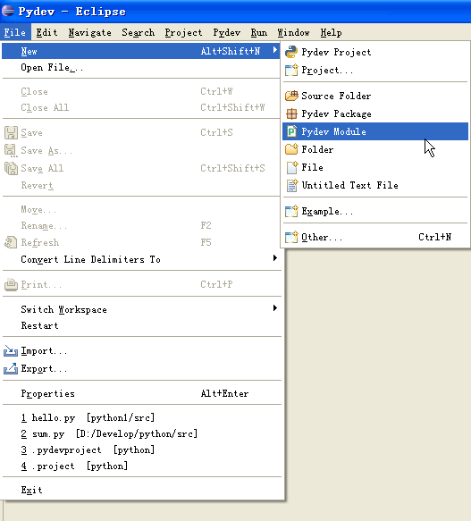
在弹出的窗口中选择文件存放位置以及Moudle Name，注意Name不用加.py，它会自动帮助我们添加。然后点击Finish完成创建。
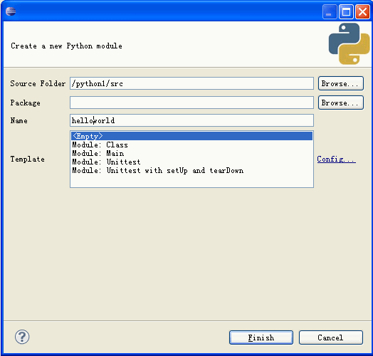
输入"hello world"的代码。
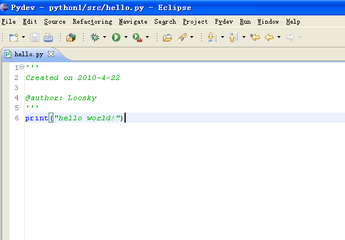
1.3.6. 6、执行程序
程序写完后，我们可以开始执行程序,在上方的工具栏上面找到执行的按钮。
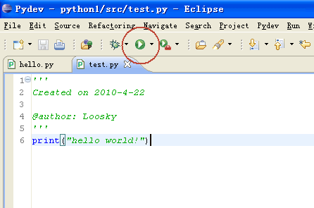
之后会弹出一个让你选择执行方式的窗口，通常我们选择Python Run，开始执行程序。
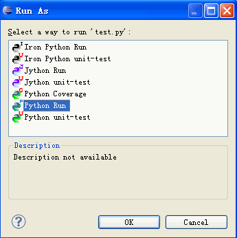
1.4. 更多 Python IDE
推荐10 款最好的 Python IDE：http://www.runoob.com/w3cnote/best-python-ide-for-developers.html
当然还有非常多很棒的 Python IDE，你可以自由的选择，更多 Python IDE 请参阅：http://wiki.python.org/moin/PythonEditors